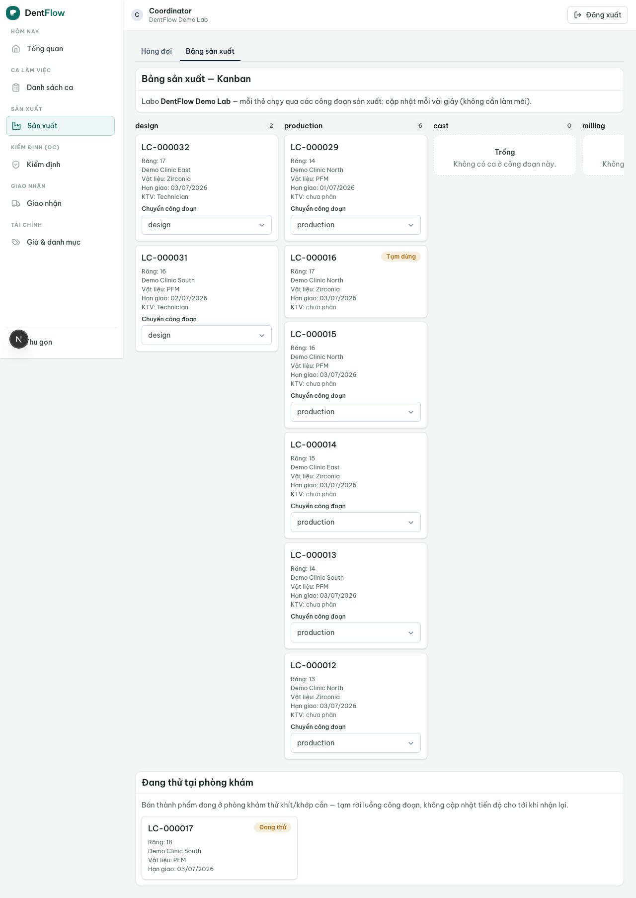
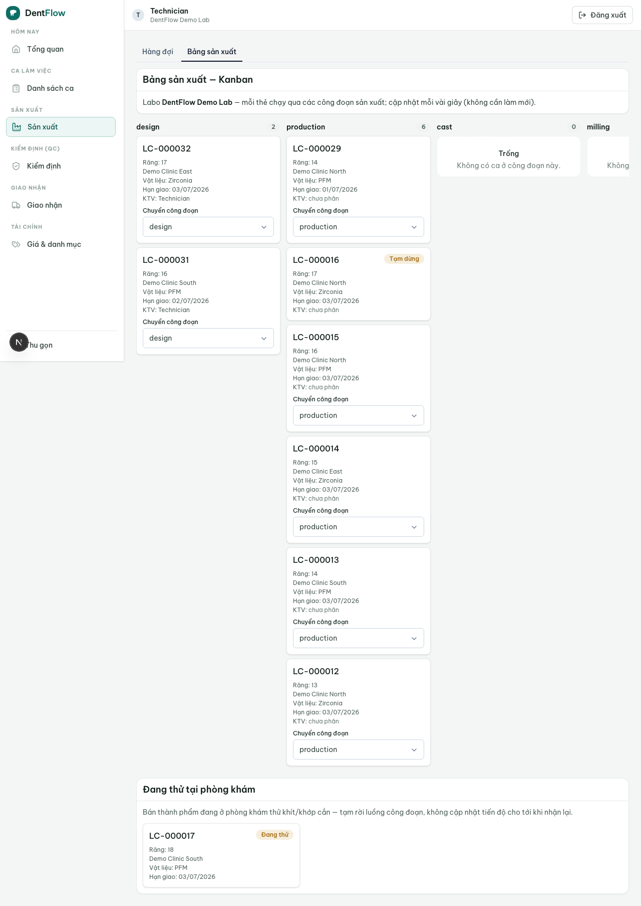

Bảng sản xuất
Một bản tiến độ realtime cả labo và phòng khám cùng nhìn — hết "case đang ở đâu, xong chưa" trên Zalo.
Bảng sản xuất là bảng theo dõi realtime kiểu Kanban: mỗi case là một thẻ chạy qua các cột công đoạn sản xuất (design → milling → sinter → polish/glaze → bàn giao QC). Đây là lớp hiển thị + cập nhật cho phần in_production của vòng đời case — technician cập nhật tiến độ từng bước, ai xem cũng thấy một bản trạng thái duy nhất.

Case vào và rời board khi nào
Board không sở hữu trạng thái case — nó đọc/ghi bản ghi state của vòng đời case:
- Một case vào board khi sang
in_production; rời board khi chuyển sangqc. - Mỗi công đoạn là một cột; di chuyển thẻ = ghi nhận tiến độ trong cùng state
in_production. - Một thẻ chỉ ở một công đoạn tại một thời điểm (single source of truth).
- Mỗi lần chuyển công đoạn ghi mốc thời gian + ai chuyển, để truy nguồn.
- Case
on_hold(chờ vật liệu) vẫn hiện nhưng đánh dấu tạm dừng, không tính tiến độ.
Tập cột sinh theo material
Tập cột công đoạn phụ thuộc material của case — không hard-code một chuỗi duy nhất. Một material không bao giờ hiện cột không thuộc chuỗi của nó:
| Material | Chuỗi cột công đoạn |
|---|---|
| Zirconia / e.max | design → milling → sinter → polish/glaze → QC |
| PFM (sứ kim loại) | design → đúc/khung kim loại → đắp sứ → polish/glaze → QC (không có sinter) |
| Hàm nhựa (acrylic) | gắn răng → ép/hoàn thiện → QC (không milling/sinter) |
Công đoạn shade-critical & vòng try-in
Sản xuất răng sứ VN là hybrid CAD/CAM + hoàn thiện thủ công nặng: phần máy (design → milling → sinter) chỉ là nửa đầu; nửa sau là technician đắp/nhuộm/tráng men bằng tay — đây mới là chỗ shade thực sự "đậu" và là công đoạn nhạy cảm làm-lại nhất.
- Polish/glaze là bước shade-critical: thẻ ở cột này làm nổi shade mục tiêu (code + ảnh tab nếu có) ngay trên mặt thẻ để technician đối chiếu. Thiếu shade mục tiêu → cảnh báo, không để technician "đoán" màu.
- Vòng try-in: case phức tạp (răng trước / cầu) rời board giữa chừng để gửi bán thành phẩm về phòng khám thử khít/khớp cắn rồi nhận lại. Thẻ ở
try_intách thành làn riêng "đang thử tại phòng khám", tạm rời luồng công đoạn; board không cho cập nhật tiến độ cho tới khi quay lạiin_production(tránh ghi tiến độ "ảo"). Vòng này lặp được nhiều lần.
Ai cập nhật, ai chỉ-đọc
- Technician — chỉ cập nhật công đoạn mình được phân: bắt đầu / xong / chuyển công đoạn sau.
- Điều phối — nhìn toàn bảng, phát hiện ùn ứ ở một công đoạn, cân tải giữa technician.
- Nha sĩ / lễ tân (clinic) — xem cùng board ở chế độ chỉ-đọc: case đang ở công đoạn nào, dự kiến xong; ẩn thao tác kéo-thả.

Realtime ở Phase-2 đạt bằng client polling (bảng tự làm mới ~8s + làm mới ngay sau thao tác của bạn), chưa phải server push (SSE). Cập nhật của bạn hiện tới người khác trong vài giây, không cần bấm refresh. Mạng yếu (đặc thù VN): cập nhật lạc quan tại client rồi đồng bộ lại khi có mạng — không kẹt UI. Logic cổng QC nằm ngoài board (feature riêng, xem trang kế).